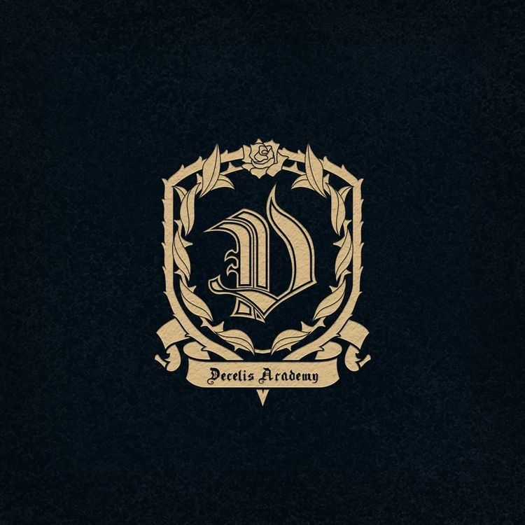
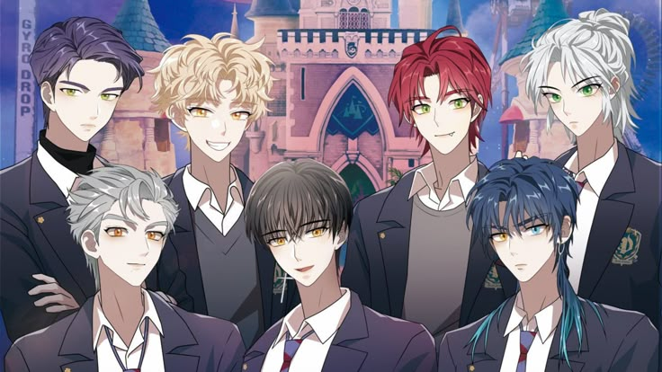
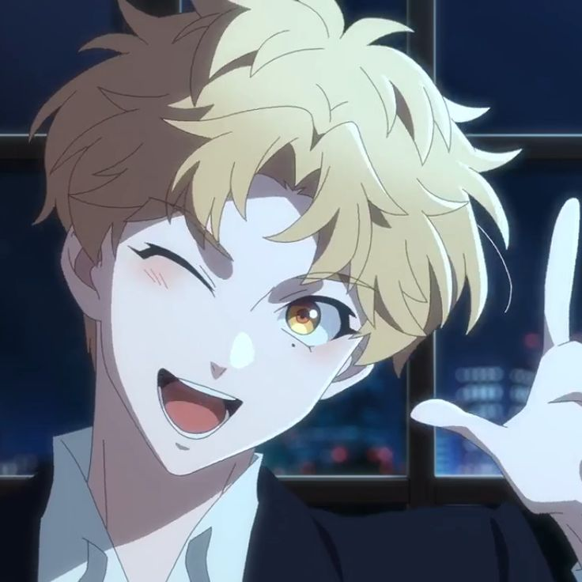
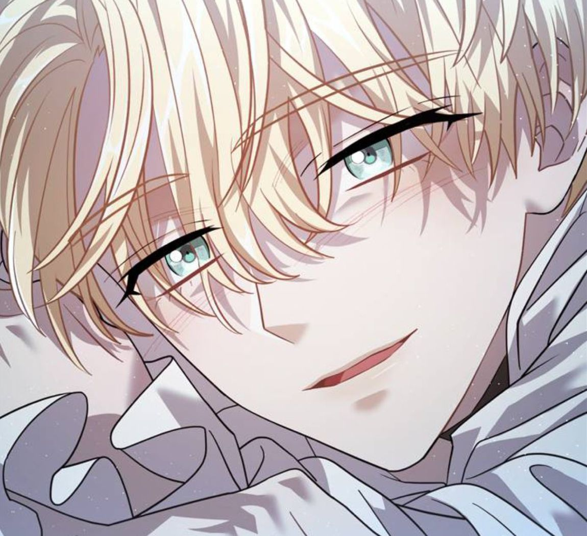

Akademi Decilis
Akademi Decelis didirikan 300 tahun yang lalu di Riverfield sebagai sekolah komunitas kecil, kemudian diubah melalui sumbangan dari pengusaha terkenal Riverfield Jacque Decelis menjadi lembaga pendidikan bergengsi dan terkenal di dunia seperti yang ada saat ini.

Karakter Utama Darkmoon
DARK MOON: The Blood Altar menceritakan sekelompok karakter dengan latar dunia fantasi gelap yang dipenuhi konflik antara vampir, manusia, dan makhluk lain, di mana tokoh-tokohnya seperti Heli digambarkan sebagai sosok vampir kuat namun penuh luka masa lalu, kemudian Solon yang lebih tenang dan rasional, serta Jaan yang memiliki sisi emosional dan protektif terhadap kelompoknya, sementara Shion terlihat misterius dan cenderung tertutup, dan Sooha sebagai karakter manusia yang menjadi pusat cerita karena keterkaitannya dengan para vampir tersebut; secara keseluruhan, setiap karakter memiliki kepribadian yang kompleks dengan latar belakang tragis, sehingga hubungan mereka dipenuhi konflik, rahasia, dan perkembangan emosional yang kuat sepanjang cerita.

Shion
Shion adalah siswa kelas 10 di Akademi Decelis dan yang paling nakal serta sosial di antara para saudara. Dia memiliki kemampuan manipulasi gravitasi, yang sering dia gunakan baik untuk bertarung maupun untuk lelucon-main-main. Dia memiliki sifat ceria dan ramah yang menyembunyikan trauma masa lalunya. Shion adalah yang paling mahir berbaur dengan masyarakat manusia dan menavigasi lanskap sosial di akademi.

Dardan
Dardan, antagonis utama dalam Dark Moon: The Blood Altar, adalah karakter yang mewujudkan arketipe penjahat sejati. Dia digambarkan sebagai pria egois, serakah, bejat, dan sadis yang sangat terobsesi dengan putri, Selen. Karakter Dardan digerakkan oleh keinginan untuk memenangkan hati Selen, menggunakan kekerasan dan manipulasi untuk mencapai tujuannya. Tindakannya didorong oleh rasa lapar akan kekuasaan, yang membuatnya melakukan pengkhianatan dan menjadi vampir tingkat rendah yang tidak sempurna. Terlepas dari berbagai upayanya untuk mendekati Selen, ketekunan Dardan dan kurangnya kemampuan magis membuatnya berubah menjadi vampir tidak sempurna, yang ia gunakan untuk menyerang Kerajaan Kuno dan merebut Selen untuk dirinya sendiri.
